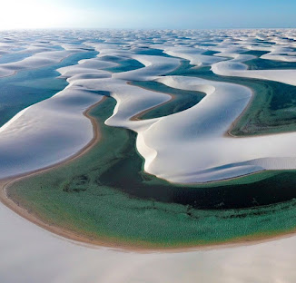

Os Lençóis Maranhenses são um paraíso ecológico único no mundo,
famoso por seu imenso deserto de dunas brancas interceptado por milhares de lagoas de água doce e cristalina. Localizado no litoral do Maranhão,
o parque foi declarado Patrimônio Mundial da UNESCO em 2024 devido à sua beleza natural excepcional.
O Parque Nacional dos Lençóis Maranhenses está localizado no litoral ocidental do estado do Maranhão, na região Nordeste do Brasil.
O parque abrange uma área de mais de 155 mil hectares e fica a cerca de 250 km de distância da capital, São Luís.
Ele está distribuído por três municípios principais que servem de base para os turistas: Barreirinhas, Santo Amaro do Maranhão e Primeira Cruz.
Melhor Época para Visitar, Junho a Setembro: Período ideal. As lagoas estão completamente cheias logo após a temporada
de chuvas (que vai de janeiro a maio) e o sol é garantido.
Outubro a Dezembro: As lagoas começam a secar gradativamente, restando poucas opções com água (como a Lagoa do Peixe).
Visualmente, os Lençóis Maranhenses parecem um deserto de proporções colossais, mas pintado com cores tropicais. O contraste cromático da paisagem é o seu traço mais marcante.

Os Lençóis Maranhenses surgiram há cerca de 10.000 anos devido a um processo geológico contínuo que combina rios, oceanos, ventos e chuvas tropicais.
Peixes nascem na areia: Quando as lagoas secam, os ovos de algumas espécies de peixes (como o peixe-gato e a traíra) sobrevivem enterrados na lama úmida do subsolo. Quando as chuvas voltam, eles eclodem e as lagoas misteriosamente se enchem de peixes novamente.Aves migrantes: O parque é uma parada estratégica para aves que migram do Hemisfério Norte (como o maçarico-de-papo-vermelho), que usam as lagoas para descansar e se alimentar.